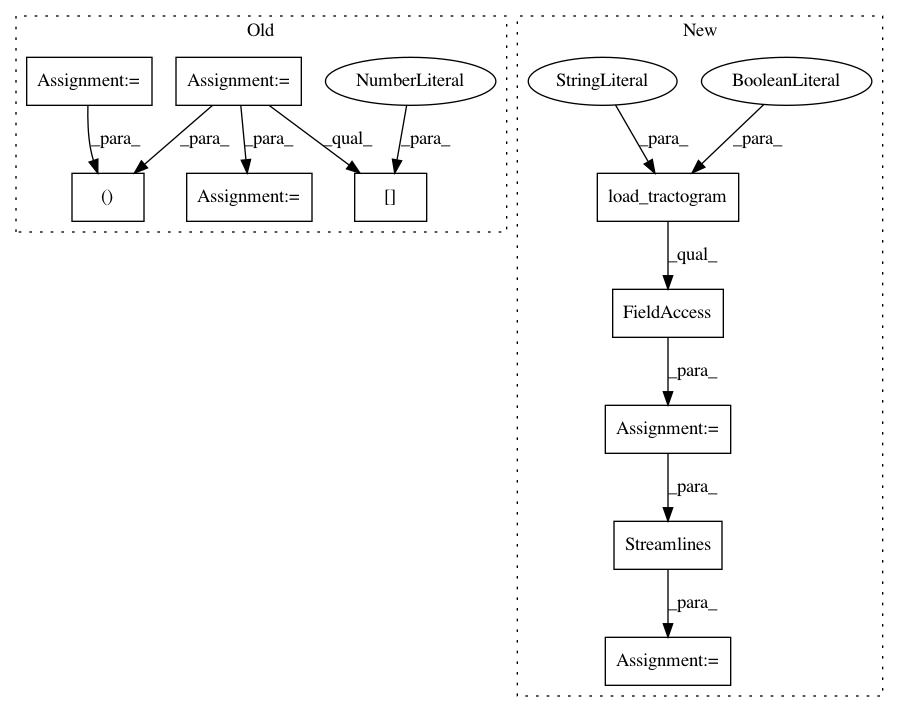

6ea94ab139681914fa165403a283c3b0d08b783b,doc/examples/segment_clustering_features.py,,get_streamlines,#,23
Before Change
from dipy.data import get_fnames
fname = get_fnames("fornix")
streams, hdr = tv.read(fname)
streamlines = [i[0] for i in streams]
return streamlines
.. _clustering-examples-IdentityFeature:
After Change
from dipy.tracking.streamline import Streamlines
fname = get_fnames("fornix")
fornix = load_tractogram(fname, "same",
bbox_valid_check=False).streamlines
streamlines = Streamlines(fornix)
return streamlines
.. _clustering-examples-IdentityFeature:
In pattern: SUPERPATTERN
Frequency: 3
Non-data size: 10
Instances
Project Name: nipy/dipy
Commit Name: 6ea94ab139681914fa165403a283c3b0d08b783b
Time: 2019-07-30
Author: skab12@gmail.com
File Name: doc/examples/segment_clustering_features.py
Class Name:
Method Name: get_streamlines
Project Name: nipy/dipy
Commit Name: 6ea94ab139681914fa165403a283c3b0d08b783b
Time: 2019-07-30
Author: skab12@gmail.com
File Name: doc/examples/segment_clustering_metrics.py
Class Name:
Method Name: get_streamlines
Project Name: nipy/dipy
Commit Name: 6ea94ab139681914fa165403a283c3b0d08b783b
Time: 2019-07-30
Author: skab12@gmail.com
File Name: dipy/segment/benchmarks/bench_quickbundles.py
Class Name:
Method Name: bench_quickbundles